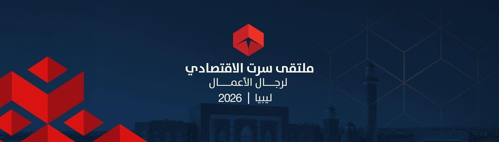
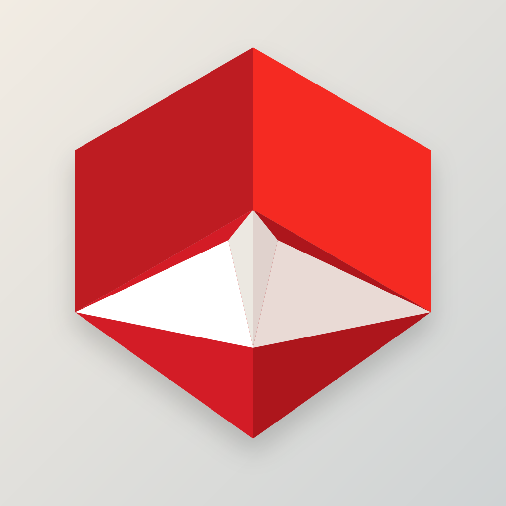
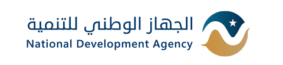
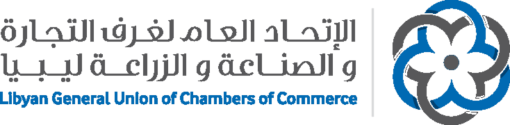
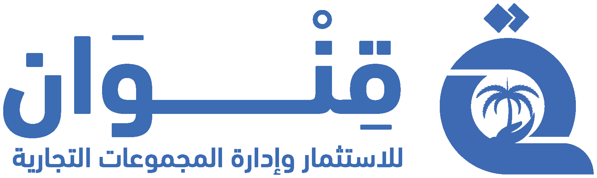
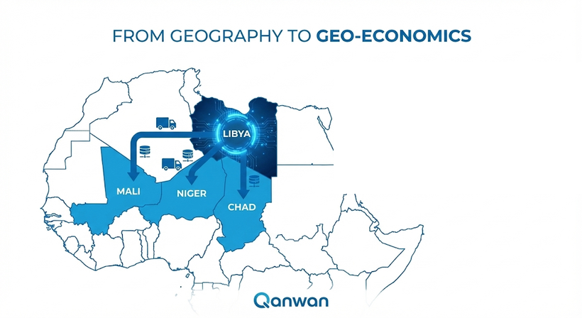
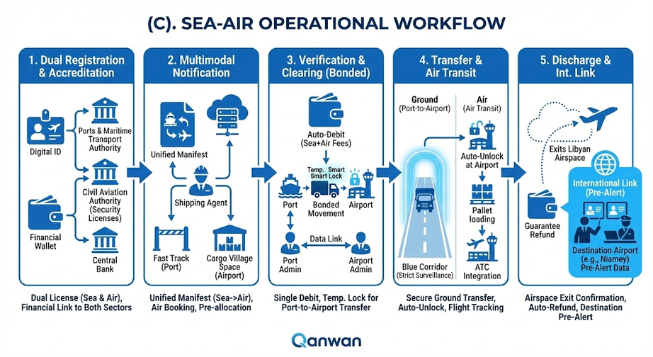
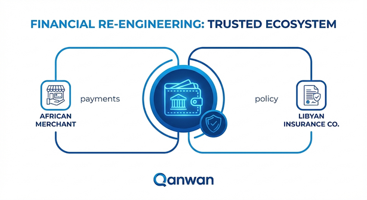

دور التحول الرقمي في خلق اقتصاد مستدام وبناء قاعدة اقتصادية لرجال الأعمال




شركة قنوان للاستثمار وإدارة المجموعات التجارية
امتداد لمجموعة استثمارية عريقة منذ عام 1990
شركة قنوان للاستثمار وإدارة المجموعات التجارية هي امتداد لمجموعة استثمارية عريقة لها باع طويل في عالم التجارة منذ عام 1990، خاصة في مجال المجوهرات والمعادن الثمينة. وتمثل قنوان اليوم الثمرة المتطورة لهذا التاريخ الحافل، حيث تتولى إدارة استثمارات المجموعة بمختلف قطاعاتها الحيوية المتنوعة، بفضل كوكبة من الشركات التجارية المتميزة ذات ملاءة مالية معتبرة وتوزيع جغرافي استراتيجي.
مبادرة قنوان الوطنية
أطلقت قنوان عدة مبادرات مع شركاء استراتيجيين من القطاع العام، أبرزهم الاتحاد العام لغرف التجارة والصناعة والزراعة، مما أثمر منصة النظام الموحد لغرف التجارة والصناعة والزراعة.
رؤية قنوان 2030
تسعى قنوان أن تكون مساهماً فاعلاً في تدوير عجلة الاقتصاد الوطني، من خلال توسيع نطاق مبادراتها وزيادة استثماراتها عبر تفعيل نظام المحافظ الاستثمارية محلياً ودولياً.
أهم قطاعات الاستثمار:
- diamondالمجوهرات
- apartmentالتطوير العقاري
- constructionالبنية التحتية
- agricultureالغذاء
- paymentsالخدمات المالية
- computerالتكنولوجيا والتحول الرقمي
- local_shippingاستيراد السيارات والآليات الثقيلة
- factoryالقطاع الصناعي
- shopping_cartالقطاع التجاري
- campaignالدعاية والإعلان
من الجغرافيا إلى الجيواقتصاد
في توقيت مفصلي يشهد فيه العالم إعادة هندسة جذرية لسلاسل الإمداد العالمية، وتحديداً مع التحديات التي فرضتها الاضطرابات الجيوسياسية على الممرات التقليدية، تبرز ليبيا ليس فقط كحقيقة جغرافية ثابتة، بل كضرورة اقتصادية ملحة. إن مبادرة «الجسر الأزرق الرقمي» تتجاوز مفهوم شق الطرق وتسيير الشاحنات؛ إنها تطرح رؤية طموحة لتحويل الموقع الاستراتيجي للدولة الليبية إلى «أصل سيادي رقمي ولوجستي»، يمنح دول الجوار الأفريقي (دول الطوق والعمق الحبيسة) شريان حياة بديلاً: آمناً، ذكياً، وسريعاً، برياً وجوياً يربط ثرواتهم بالأسواق العالمية عبر موانئنا الشمالية، مؤسساً لشراكة تكاملية مستدامة.
مبادرة الجسر الأزرق الرقمي

فكرة المبادرة
تنطلق مبادرة «الجسر الأزرق الرقمي» من قناعة راسخة بأن موقع ليبيا الجغرافي، عند ملتقى البحر المتوسط والعمق الأفريقي، يمثل أصلاً استراتيجياً لم يُستثمر بعد بالشكل الأمثل. فبدلاً من الاكتفاء بدور تقليدي كممر عبور للبضائع، تطرح المبادرة رؤية لتحويل هذا الموقع إلى منصة رقمية سيادية موحدة، تدير حركة التجارة براً وبحراً وجواً عبر هوية رقمية موثوقة، ومحفظة مالية آمنة، وسياج جغرافي إلكتروني يواكب أفضل المعايير الدولية. بهذا التحول، تعيد ليبيا تعريف دورها الإقليمي؛ من نقطة عبور جغرافية إلى مركز ثقل خدماتي ومالي ولوجستي يخدم أسواقاً أفريقية تتجاوز 90 مليون نسمة.
مبادرة الجسر الأزرق الرقمي
أهداف المبادرة وفوائدها
ترسيخ السيادة الرقمية
بناء نافذة وطنية موحدة تدير البيانات والمعاملات التجارية تحت إشراف سيادي كامل.
زيادة الإيرادات الوطنية
تحويل رسوم العبور والخدمات اللوجستية إلى مصدر دخل ثابت ومتجدد للدولة.
تسريع حركة التجارة
خفض زمن العبور وتكاليفه عبر أتمتة الإجراءات الجمركية والأمنية.
تنشيط القطاع المصرفي والتأميني
إعادة تدوير الخدمات المالية والتأمينية داخل الاقتصاد الوطني بدلاً من تسربها للخارج.
خلق فرص عمل نوعية
توليد وظائف تقنية ولوجستية جديدة تواكب متطلبات الاقتصاد الرقمي.
تعزيز الأمن والشفافية
توفير تتبع رقمي لحظي للشحنات يحد من التهريب ويرفع مستوى الامتثال الدولي.
دور التحول الرقمي في خلق اقتصاد مستدام
يشكل التحول الرقمي حجر الأساس في تحقيق استدامة اقتصادية طويلة الأمد؛ فبدلاً من الاعتماد على موارد ناضبة أو إجراءات ورقية بطيئة، تعتمد المبادرة على بنية رقمية متكاملة تربط الجهات الحكومية والمصرفية واللوجستية في منظومة واحدة، تُنتج بيانات دقيقة تدعم القرار الاقتصادي، وتفتح الباب أمام إيرادات متجددة من الخدمات الرقمية والمالية.
سيادة البيانات
امتلاك الدولة الكامل لبياناتها التجارية واللوجستية وتحليلها لدعم التخطيط الاقتصادي.
شمول مالي أوسع
دمج المشغلين والتجار في منظومة مصرفية رقمية تقلل الاعتماد على النقد والوسطاء.
كفاءة تشغيلية وبيئية
تقليص الإجراءات الورقية والوقود المهدر نتيجة الانتظار، بما يخفض الأثر البيئي.
نمو اقتصادي متجدد
تحويل الخدمات الرقمية إلى مصدر دخل دائم يعزز استقرار الاقتصاد الوطني على المدى الطويل.
بروتوكول التشغيل البري (Operational Workflow)
-
1
التسجيل والاعتماد (Registration)
تأسيس "هوية رقمية" ومحفظة مالية للمشغل، يتم تفعيلها فقط بعد التحقق الآلي من الأهلية عبر الربط المباشر مع وزارة الاقتصاد والمصرف المركزي.
-
2
الإخطار المسبق (Notification)
يرفع الوكيل الملاحي "بيان الشحنة" إلكترونياً قبل الوصول، مما يتيح للنظام القراءة الاستباقية للبيانات وتجهيز الموارد.
-
3
التحقق والمقاصة (Verification)
يقوم النظام آلياً بتحليل المخاطر لتحديد نوع التتبع (قفل/ستيكر)، وتنفيذ "الخصم المباشر" للرسوم من المحفظة، وإتمام "الاقتران الرقمي" في الميناء بالتكامل مع الجمارك وسلطات الميناء.
-
4
عملية العبور (Transit)
انطلاق الشاحنة في "ممر آمن" تحت رقابة "سياج جغرافي" يبث الموقع لحظياً لغرفة عمليات وزارة الداخلية؛ حيث يولد أي انحراف عن المسار تنبيهاً أمنياً فورياً.
-
5
التخليص والربط الدولي (Clearance & Int. Link)
عند الحدود، يتم تأكيد الخروج واسترداد مبلغ الضمان آلياً. ويتميز النظام بمنح سلطات الدولة المستهدفة صلاحية النفاذ المسبق لبيانات الشحنة، لضمان سرعة الاستقبال والتعاون الأمني المشترك.

بروتوكول التشغيل: المسار المتعدد "بحر-جو" (Sea-Air Workflow)
-
1
التسجيل المزدوج (Dual Registration)
توسيع "الهوية الرقمية" للمشغل لتشمل صلاحيات المناولة الجوية، مع ربط المحفظة المالية بقطاعي الموانئ والطيران المدني لضمان الامتثال الموحد.
-
2
الإخطار الموحد (Unified Notification)
رفع بيان "بحر-جو" مسبق، مما يُفعل تلقائياً "المسار السريع" في الميناء ويحجز حيز التخزين في المطار قبل وصول السفينة.
-
3
التحقق والنقل البيني (Verification & Transfer)
خصم الرسوم الموحدة آلياً، وتفعيل "اقتران انتقالي" للشاحنة لنقل البضاعة من الميناء للمطار كشحنة مقيدة (Bonded) بين الدائرتين الجمركيتين.
-
4
المسار الجوي (Air Transit)
مراقبة النقل الأرضي للمطار عبر "سياج جغرافي"، ثم تتبع مسار الطائرة عبر التكامل مع الرقابة الجوية (ATC) فور الإقلاع.
-
5
الإقلاع والإبراء (Take-off & Release)
بمجرد مغادرة المجال الجوي، يعتبر النظام عملية التصدير منتهية، فيقوم برد الضمان المالي فوراً وإرسال إشعار مسبق لسلطات مطار الوجهة لتسريع الاستقبال.

مصفوفة الشركاء والتكامل المؤسسي (Stakeholders Matrix & Institutional Integration)
account_balanceالقطاع العام
وزارة الاقتصاد والتجارةMinistry of Economy & Trade
المظلة العامة والتشريعية للمشروع.General legislative umbrella for the project.
مصلحة الموانئ والنقل البحري والمطاراتPorts & Maritime Transport Authority
التنظيم الملاحي.Maritime regulation.
موانئ المناطق الحرةFree Zone Ports
البنية التحتية واللوجستية.Infrastructure and logistics.
شبكة ليبيا للتجارة (LTN)Libya Trade Network (LTN)
إدارة النافذة الوطنية وسيادة البيانات.National Window Management & Data Sovereignty.
الاتحاد العام لغرف التجارةGeneral Union of Chambers of Commerce
التنسيق التجاري بين الدول.Commercial Coordination between Nations.
مصلحة الجماركCustoms Authority
الامتثال الجمركي.Customs Compliance.
وزارة الداخليةMinistry of Interior
الامتثال الأمني.Security Compliance.
المصرف المركزي الليبيCentral Bank of Libya
التحقق من الأهلية المالية والرقابة النقدية.Financial Eligibility Verification & Monetary Oversight.
business_centerالقطاع الخاص
النواقل البحرية والوكلاءMaritime Carriers & Agents
تزويد البيانات وتسريع دوران الحاويات.Data Provision & Accelerating Turnaround.
القطاع المصرفيBanking Sector
إدارة الدورة المالية.Financial Cycle Management.
قطاع التأمينInsurance Sector
إعادة تدوير خدمات التأمين.Recycling Insurance Services.
شركة قنوان للاستثمار وإدارة المجوعات التجاريةQinwan Company
التطوير والتشغيل التقني.Development & Technical Operation.
المؤسسات والشركات (القطاع الخاص)Private Sector Institutions & Companies
الشركاء التنفيذيون وسلاسل الإمداد.Execution Partners & Supply Chains.
رجال الأعمالBusinessmen
المستفيدون المباشرون وقادة القرار التجاري.Direct Beneficiaries & Trade Decision-Makers.
المستثمرونInvestors
تمويل المشاريع وتوسيع قاعدة رأس المال.Project Financing & Capital Base Expansion.
publicجهات مستفيدة أخرى
دول الجوار الأفريقي (النيجر، تشاد، مالي، بوركينا فاسو)African Neighboring Countries
الأسواق المستهدفة والمستفيد الأكبر من الممر اللوجستي.Target Markets & Primary Beneficiaries of the Corridor.
إعادة تدوير الخدمات المالية والتأمينية
تخلق المنصة فرصة ذهبية للقطاع المالي الليبي ليكون لاعباً قارياً، عبر:
المصارف كضامن موثوق
تفرض المنصة التعامل عبر المصارف الليبية لفتح "محفظة العبور الرقمية"، مما يوفر سيولة من العملة الصعبة، ويعزز ثقة المستثمر الأفريقي في النظام المصرفي الليبي.
توطين قطاع التأمين
ستلزم الشحنات العابرة بالحصول على "بوليصة تأمين عبور شاملة" صادرة حصرياً من شركات التأمين الليبية، مما يعيد تدوير أقساط التأمين داخل الاقتصاد الوطني بدلاً من ذهابها لشركات أجنبية.

شواهد النجاح العالمية والميزة التنافسية (Global Benchmarks & Competitive Edge)
تؤكد تقارير (IMF, World Bank, UNCTAD 2024) أن "الرقمنة" هي الرافعة الاقتصادية الأقوى للمنطقة، وفق الشواهد التالية:
تغلب التقنية على التحديات الأمنية (نموذج الصومال)
نجحت منصة "ميناء بربرة" الرقمية في رفع حصتها من تجارة إثيوبيا من 0% إلى 32% خلال 4 سنوات فقط، رغم الظروف الأمنية الصعبة.
الكفاءة الأمنية القصوى (نموذج شرق أفريقيا)
أثبتت أنظمة التتبع الإلكتروني قدرتها على خفض زمن العبور من 21 يوماً إلى 4 أيام، والقضاء على سرقة البضائع بنسبة 99%.
اقتصاد الخدمات (نموذج جيبوتي)
تشكل خدمات العبور حالياً 72.8% من الناتج المحلي الإجمالي، مما يجعله البديل الاستراتيجي للنفط.
ميزة ليبيا الحاسمة (القرب من أوروبا)
تتفوق ليبيا على منافسيها في غرب أفريقيا بكونها الأقرب للأسواق الأوروبية (2-3 أيام شحن بحري مقابل 12 يوماً)، مما يوفر للتاجر النيجيري 50% من زمن دورة رأس المال، ويحقق وفورات سنوية تتجاوز 200 مليون دولار (وفق تقديرات AfDB).
الديموغرافيا والاقتصاد
لا تستهدف المبادرة أرقاماً صماء، بل تستهدف كتلاً بشرية هائلة تمثل سوقاً استهلاكياً متنامياً، بإجمالي واردات يتجاوز 15.54 مليار دولار وسوق بشري يقارب 95 مليون نسمة:
-
1
جمهورية النيجر (الهدف الرئيسي)
السكان: حوالي 27 مليون نسمة. الواردات: 3.84 مليار دولار. الهدف: الاستحواذ على 35% - 40% كبديل لموانئ بنين.
-
2
جمهورية تشاد (الهدف الملح)
السكان: حوالي 19 مليون نسمة. الواردات: 1.80 مليار دولار. الهدف: الاستحواذ على 30% - 35% لتعويض مسار بورتسودان.
-
3
أسواق العمق (مالي وبوركينا فاسو)
السكان: حوالي 48 مليون نسمة مجتمعة. الهدف: استهداف البضائع النوعية عالية القيمة. القيمة المضافة للمتعاملين: خفض التكلفة إلى 12% - 14%، واختصار الزمن إلى 3 - 5 أيام، والقضاء على الإتاوات.

الامتثال الدولي والاتفاقيات
-
1
AfCFTA
تطبيق قواعد المنشأ.
-
2
WCO (SAFE)
معايير أمن التجارة.
-
3
AML/KYC
الامتثال المالي الدولي.

الخاتمة ودعوة للمباركة
إن مبادرة «الجسر الأزرق الرقمي» هي إعادة صياغة لدور ليبيا الإقليمي؛ من دولة عبور جغرافي إلى "مركز ثقل خدماتي ومالي". نحن نقدم نظاماً يتكامل مع ما هو قائم، يحيي قطاعاتنا المصرفية والتأمينية، ويخدم سوقاً يتجاوز 90 مليون نسمة. نضع بين أيديكم هذه الوثيقة، متطلعين لنيل مباركتكم ورعايتكم الكريمة لهذه المبادرة الاستراتيجية.
مبادرة الجسر الأزرق الرقمي